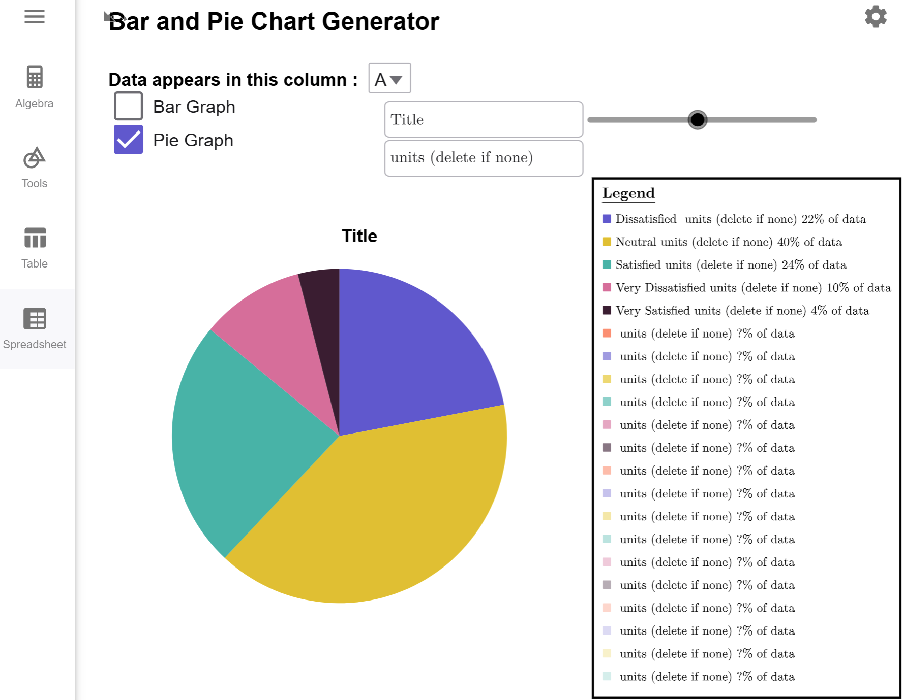
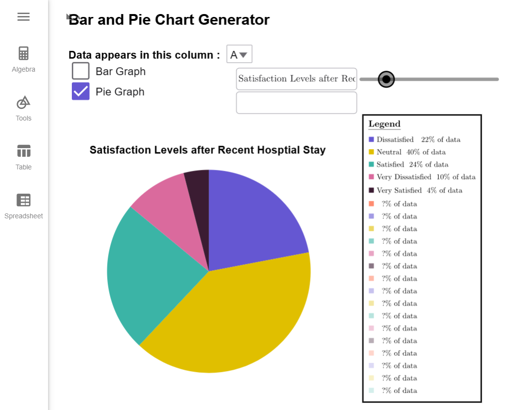

Creating Pie Graphs
A pie chart is statistical graph that divides a circle up into slices whose area is proportional to the quantity of the category that it represents. Pie charts are useful when there are a small selection of categories, and the categories represent every possible option under consideration.Conditions for Using a Pie Graph
When can I use a Pie Graph?
A pie graph should only be used under two specific conditions.
- Data can belong to exactly one of the categories.
- Categories must be parts of a whole.
For example, the following table summarizes the numbers of stars a particular store was rated during a 30-day period.
| Star Rating | Percentage of Ratings | Number of Transactions |
|---|---|---|
| 1 Star | 5% | 16,468 |
| 2 Stars | 12% | 39,522 |
| 3 Stars | 8% | 26,348 |
| 4 Stars | 20% | 65,871 |
| 5 Stars | 55% | 181,144 |
Notice that every category is included, and since each transaction can only be associated to exact one rating, the first condition is satisfied as well. This data could be made into a Pie Chart.
Suppose a survey asked which department(s) a customer purchased from during their last visit to a particular department store. Explain why a pie graph cannot be used with the following set of data.
| Department | Percentage of Shoppers |
|---|---|
| Electronics | 40% |
| Clothing | 55% |
| Groceries | 70% |
| Home & Furniture | 30% |
| Sports & Outdoors | 25% |
Solution
Although this data is helpful for stores to understand which departments are shopped the most, it is not suitable for creating a pie chart because customers may shop in multiple departments during a single visit. Unless the question is reframed to something like, "Which department was your primary reason for visiting the store today?" customers will fall into more than one category, violating the first condition.
Moreover, this categorical overlap causes the percentages to exceed 100%, which goes against the pie chart's requirement that all parts must represent a complete whole.
Additionally, the list of departments may not be exhaustive (e.g., common departments like "Health & Beauty" are missing), further disqualifying this data for use in a pie chart.
$$\tag*{\(\blacksquare\)}$$
Example 2
A survey was conducted to determine the types of activities people prefer on weekends. A survey of 1,303 people were asked, "Which of the follow activities do you most prefer to do on weekends? Please select only one option." The percentages were tabulated and reported in the table below. Explain why a pie chart cannot be created from this table and suggest how it could be corrected.
| Activity | Percentage |
|---|---|
| Watching Movies | 25% |
| Outdoor Sports | 30% |
| Reading Books | 20% |
| Cooking | 15% |
| Playing Video Games | 8% |
Solution
Since the survey question required respondents to select only one activity, we know that each person belongs to exactly one category. However, the given percentages only add up to 98%, which indicates that 2% of the data is missing. To fix this, we can create an "Other" category to account for the remaining 2%. This ensures that all respondents are included, and the categories represent parts of a whole. Once the missing data is accounted for, the conditions for creating a pie chart are satisfied.
$$\tag*{\(\blacksquare\)}$$
As a final example, it is important to recognize that some reported data may have percentages that add up to 100%, but the categories are not truly parts of a whole. This often confuses students who focus too heavily on the idea that the parts must sum to 100%, without recognizing that the data does not represent components of a single whole. The next example provides a demonstration of this type of situation.
Example 3
A survey asked 1,373 respondents, "What is your favorite activity while on vacation?" The responses are summarized in the following table. Explain why this data cannot be used to make a Pie Chart.
| Activity | Percentage |
|---|---|
| Sightseeing | 35% |
| Relaxing on the beach | 25% |
| Trying local cuisine | 20% |
| Outdoor adventures (e.g., hiking or kayaking) | 10% |
| Shopping | 10% |
Solution
In this case, the percentages add up to 100%, but the responses do not represent parts of a whole. Each response reflects a preference for a single activity while on vacation, rather than components of a unified whole. For example, another type of response could have been attending cultural events such as festivals, concerts, or other local performances.
This illustrates how data that sums to 100% can still fail to meet the criteria of representing parts of a single whole.
$$\tag*{\(\blacksquare\)}$$
Constructing Pie Graphs
Pie Graphs are difficult to draw well by hand and are exclusively made with technology nowadays. The following example will show you how to build Pie Charts with the Bar and Pie Chart Generator Tool.
Example 4
A survey of 50 patients who were recently discharged from a hospital were asked to rate their
overall stay at the hospital as Very Satisfied, Satisfied, Neutral, Dissatisfied, or Very
Dissatisfied. The results are complied in the table below. Use the Bar and Pie Chart
Generator Tool to make a Pie Graph of the data.
| Satisfaction Levels | ||||
|---|---|---|---|---|
| Neutral | Neutral | Very Dissatisfied | Satisfied | Satisfied |
| Dissatisfied | Satisfied | Neutral | Very Dissatisfied | Very Dissatisfied |
| Dissatisfied | Neutral | Dissatisfied | Neutral | Satisfied |
| Satisfied | Neutral | Dissatisfied | Very Satisfied | Satisfied |
| Dissatisfied | Satisfied | Neutral | Neutral | Neutral |
| Dissatisfied | Neutral | Neutral | Neutral | Neutral |
| Satisfied | Neutral | Satisfied | Very Satisfied | Dissatisfied |
| Very Dissatisfied | Neutral | Dissatisfied | Neutral | Dissatisfied |
| Very Dissatisfied | Dissatisfied | Neutral | Satisfied | Dissatisfied |
| Satisfied | Neutral | Satisfied | Neutral | Neutral |
Solution
First, load the data into the Bar and Pie Chart Generator Tool and note that the tool automatically generates a bar graph by default. Click on the Pie Graph Checkbox, and it switches the graph to a Pie Graph.

Since there are no units attached to our data, we can delete the text from the units textbox. We also give the pie chart a title, and our pie chart is complete.

$$\tag*{\(\blacksquare\)}$$